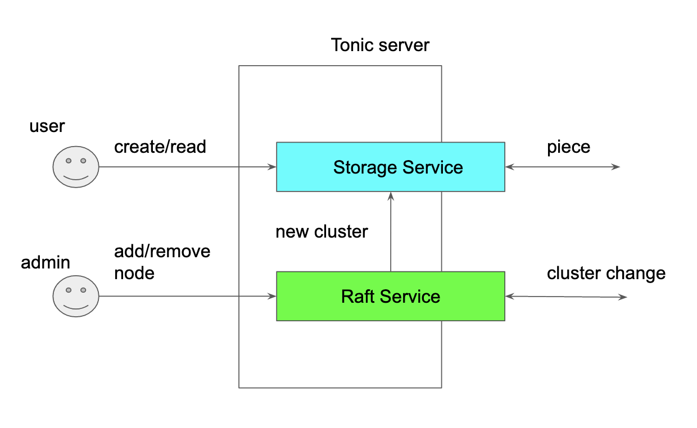
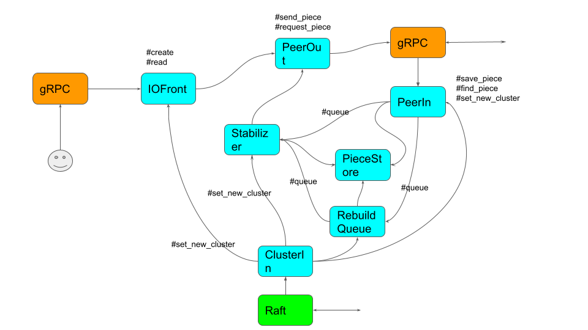

Architecture
Overview
Sorock implements the server using Tonic so all external communication is done by gRPC.
Tonic allows to stack gRPC services in the server.
Sorock uses Raft consensus algorithm to replicate the cluster change because all nodes have to at least eventually see the same cluster state and replication should be quick enough. Some other system uses gossip protocol to disseminate the cluster change but using Raft it will be more quicker.
Raft service builds the ASURA data structure based on cluster changes and then it is passed to Storage service.
Storage service is responsible for handling user requests but lot of p2p communications are executed in the cluster. When the cluster is changed, it tries to move the erasure-coded pieces to the appropriate nodes and rebuild a piece if it is lost.

Microservices
The internal of the Storage service is implemented as a group of in-process microservices.
norpc is a library to design async application that in-process microservices running on Tokio runtime communicate each other using RPC over messsage channel. You can learn more about the library in this doc: norpc book.
This project is not only a aspiring distributed storage project but an experiment in software architecture. My question is "Can norpc design async application better?". To search for the answer, the internal of Sorock is designed this way.
